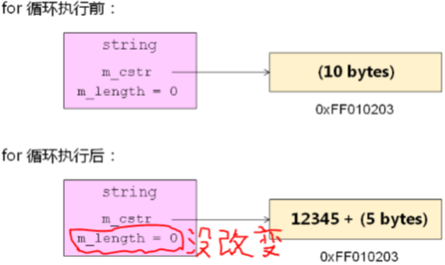

原文连接:https://www.cnblogs.com/dishengAndziyu/p/10913462.html
1，关于赋值的疑问：
1，什么时候需要重载赋值操作符？
2，编译器是否提供默认的赋值操作符？
2，关于赋值的疑问：
1，编译器为每个类默认重载了赋值操作符；
1，意味着同类型的类对象可以相互赋值；
2，默认的赋值操作符仅完成浅拷贝；
3，当需要进行深拷贝时必须重载赋值操作符；
1，和拷贝构造函数相同；
4，赋值操作符与拷贝构造函数有相同的存在意义；
3，默认赋值操作符重载编程实验：
1，main.cpp 文件：
1 #include <iostream>
2 #include <string>
3
4 using namespace std;
5
6 class Test
7 {
8 int* m_pointer;
9 public:
10 Test()
11 {
12 m_pointer = NULL;
13 }
14 Test(int i)
15 {
16 m_pointer = new int(i);
17 }
18 Test(const Test& obj)
19 {
20 m_pointer = new int(*obj.m_pointer);
21 }
22 Test& operator = (const Test& obj)
23 {
24 if( this != &obj ) // 避免自赋值；
25 {
26 delete m_pointer;
27 m_pointer = new int(*obj.m_pointer);
28 }
29
30 return *this;
31 }
32 void print()
33 {
34 cout << "m_pointer = " << hex << m_pointer << endl;
35 }
36 ~Test()
37 {
38 delete m_pointer;
39 }
40 };
41
42 int main()
43 {
44 Test t1 = 1;
45 Test t2;
46
47 t2 = t1; // 默认赋值操作符的浅拷贝使得两个对象内部指针指向同一片空间；
48
49 int i = 0; // C 语言中允许这样，所以 C++ 中也必须允许；
50 i = i;
51
52 t2 = t2; // C++ 中也要允许自赋值，但是没有意义；
53
54 t1.print();
55 t2.print();
56
57 return 0;
58 }2，输出结果：
m_pointer = 0x9387008
m_pointer = 0x9387018
3，赋值操作符重载注意事项：
1，赋值操作符返回值一定是引用，为了连续赋值；
2，参数类型一定是 const Type&；
3，不能自赋值；
4，返回当前对象；
4，关于赋值的疑问：

1，如果要进行深拷贝，拷贝构造函数和赋值操作符的实现都要自定义；
5，一般性原则：
1，重载赋值操作符，必然要实现深拷贝；
1，实现深拷贝和自定义赋值操作符及拷贝构造函数是充要条件；
6，数组类的优化编程实验：
1，IntArray.h 文件：
1 #ifndef _INTARRAY_H_
2 #define _INTARRAY_H_
3
4 class IntArray
5 {
6 private:
7 int m_length;
8 int* m_pointer;
9
10 IntArray(int len);
11 IntArray(const IntArray& obj);
12 bool construct();
13 public:
14 static IntArray* NewInstance(int length);
15 int length();
16 bool get(int index, int& value);
17 bool set(int index ,int value);
18 int& operator [] (int index);
19 IntArray& operator = (const IntArray& obj);
20 IntArray& self();
21 ~IntArray();
22 };2，首先写出赋值操作符注意事项模板：
1 IntArray& IntArray::operator = (cosnt IntArray& obj)
2 {
3 if( this != &obj )
4 {
5
6 }
7
8 return *this;
9 }3，函数实现：
1 IntArray& IntArray::operator = (const IntArray& obj)
2 {
3 if( this != &obj )
4 {
5 int* pointer = new int[obj.m_length];
6
7 if( pointer )
8 {
9 /* 复制参数对象中的元素 */
10 for(int i=0; i<obj.m_length; i++)
11 {
12 pointer[i] = obj.m_pointer[i];
13 }
14
15 /* 深拷贝 */
16 m_length = obj.m_length;
17 delete[] m_pointer;
18 m_pointer = pointer;
19 }
20 }
21
22 return *this;
23 }4，main.cpp 文件：
1 #include <iostream>
2 #include <string>
3 #include "IntArray.h"
4
5 using namespace std;
6
7 int main()
8 {
9 IntArray* a = IntArray::NewInstance(5);
10 IntArray* b = IntArray::NewInstance(10);
11
12 if( a && b )
13 {
14 IntArray& array = a->self();
15 IntArray& brray = b->self();
16
17 cout << "array.length() = " << array.length() << endl;
18 cout << "brray.length() = " << brray.length() << endl;
19
20 array = brray;
21
22 cout << "array.length() = " << array.length() << endl;
23 cout << "brray.length() = " << brray.length() << endl;
24 }
25
26 delete a;
27 delete b;
28
29 return 0;
30 }5，输出结果：
1 array.length() = 5
2 brray.length() = 10
3 array.length() = 10
4 brray.length() = 10
6，使用二阶构造后，拷贝构造函数是私有的，拷贝构造函数就没有作用了，不允许拷贝构造，但是应该重载赋值操作符重载；
7，编译器默认提供函数：
1，虽然类中什么都没写，但是编译器会放四个函数实现进去；
8，下面的代码输出什么？为什么？
1，代码示例：
1 string s = "12345";
2 const char* p = s.c_str(); // 返回字符指针，代表 C 语言中的字符串；
3
4 cout << p << endl;
5
6 s.append("abced");
7
8 cout << p << endl;
9，字符串问题 1 编程实验：
1，main.cpp 文件：
1 #include <iostream>
2 #include <string>
3
4 using namespace std;
5
6 int main()
7 {
8 string s = "12345";
9 const char* p = s.c_str(); // 只有这一行用了 C 方式；
10
11 cout << p << endl;
12
13 s.append("abced"); // p 成为了野指针
14
15 cout << p << endl;
16
17 return 0;
18 }2，这段代码混合了 C 和 C++ 的方式，出了意想不到的错误；
10，关于 string 的疑问 1：
1，string 对象内部维护了一个指向数据的 char* 指针，这个指针可能在程序 运行的过程中发生改变，我们尽量不要操作这个指针；
2，执行 s.append() 函数后，char* 指针指向了新的堆空间 0xFF445566，而将旧的堆空间 0xFF112233 释放，此时 p 指针成了野指针；
3，学习 C++，并且用的是标准库中的内容，所以现在采用的编程思想就应该是 C++ 编程思想，不要混合使用 C 和 C++ 思想；
11，下面的程序输出什么？为什么？
1，代码示例：
1 const char* p = "12345"; // p 可以用字符串对象代替；
2 string s = ""; // 混合了，该注意了；
3
4 s.reserve(10);
5
6 // 不要使用 C 语言中的方式操作 C++ 中的字符串
7 for(int i=0; i<5; i++)
8 {
9 s[i] = p[i];
10 }
11
12 if( !s.empty() )
13 {
14 cout << s << endl;
15 }2，没有输出；
12，字符串问题 2 编程实验：
1，main.cpp 文件：
1 #include <iostream>
2 #include <string>
3
4 using namespace std;
5
6 int main()
7 {
8 const char* p = "12345";
9 string s = "";
10
11 s.reserve(10);
12
13 // 不要使用 C 语言中的方式操作 C++ 中的字符串
14 for(int i=0; i<5; i++)
15 {
16 s[i] = p[i];
17 }
18
19 if( !s.empty() ) // 打印不出；
20 {
21 cout << s << endl;
22 }
23
24 cout << s << endl; // 打印不出；
25
26 for(int i=0; i<5; i++) // 可以打印；
27 {
28 cout << s[i] << endl;
29 }
30
31 return 0;
32 }2，更改程序为：
1 #include <iostream>
2 #include <string>
3
4 using namespace std;
5
6 int main()
7 {
8 const string p = "12345";
9 string s = "";
10
11 s = p;
12
13 cout << s << endl;
14
15 return 0;
16 }3，C++ 工程中，尽量避免指针使用，字符串类出现就是为了替代字符指针；
13，关于 string 的疑问 2：

14，小结：
1，在需要进行深拷贝的时候必须重载赋值操作符；
1，也要重新定义拷贝构造函数；
2，赋值操作符和拷贝构造函数有同等重要的意义；
3，string 类通过一个数据空间保存字符串数据；
4，string 类通过一个成员变量保存当前字符串的长度；
5，C++ 开发时尽量避开 C 语言中惯用的编程思想；
1，字符串类得到的是字符串对象，直接用成员函数操作这个对象就可以，不需要用 C 语言中的 for 循环之类的；